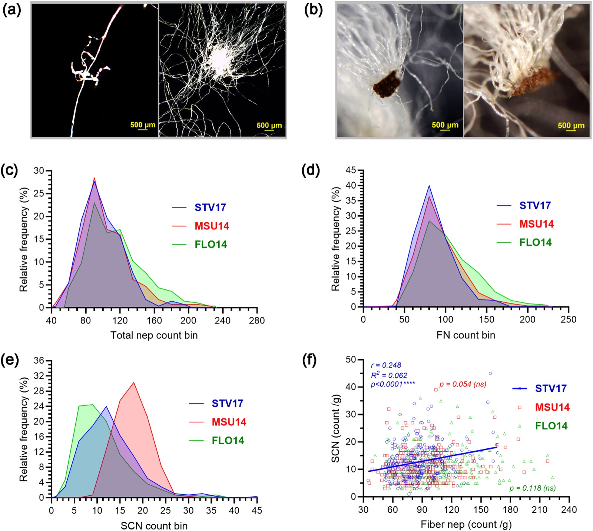
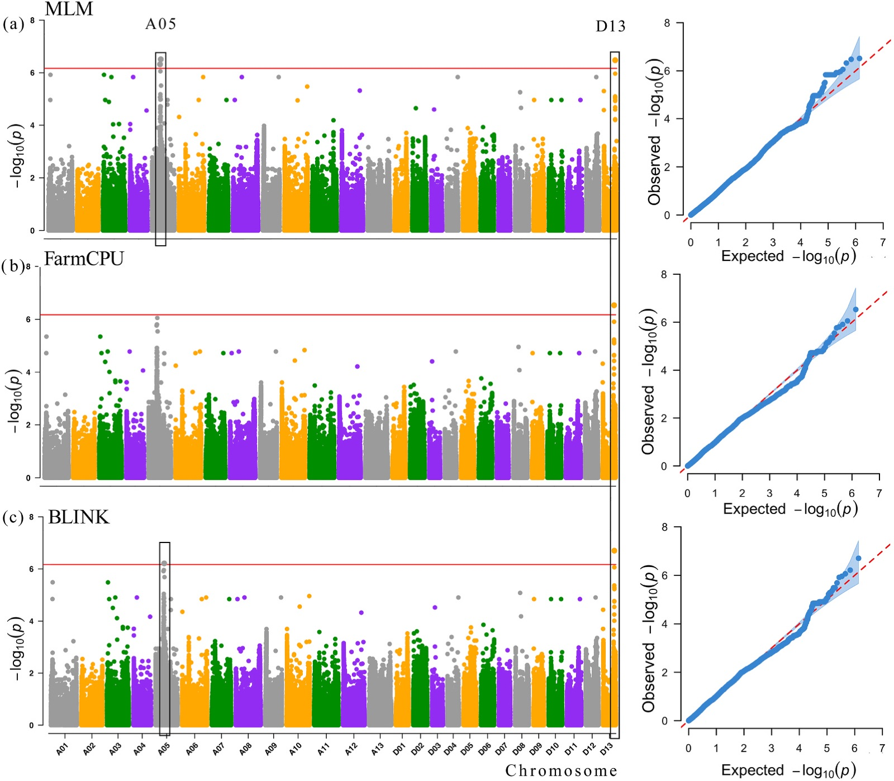
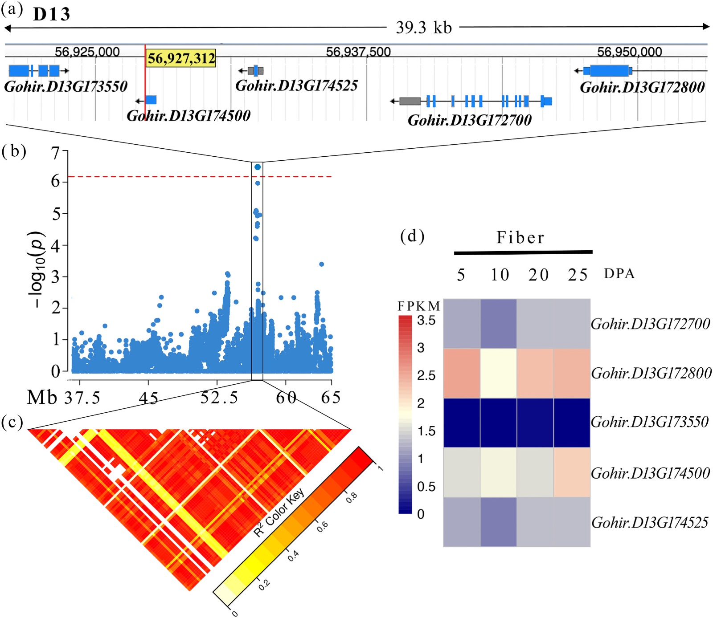
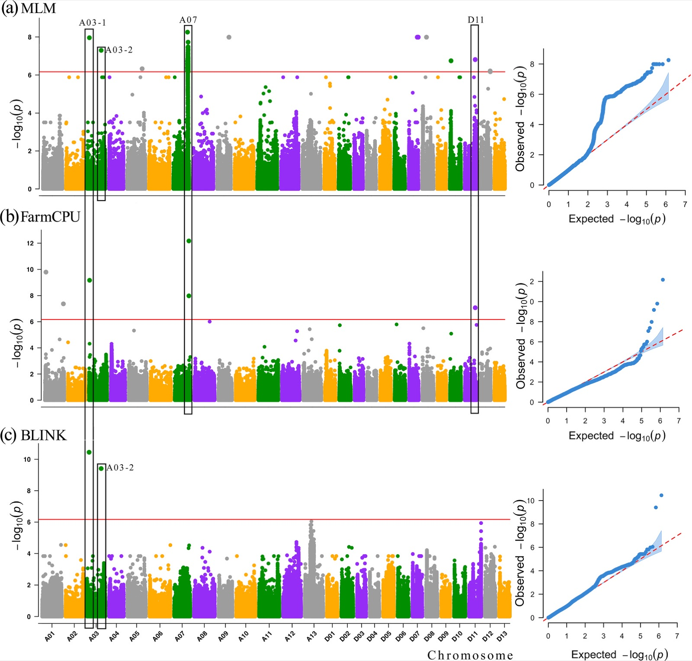

Research / Plant genomics
GWAS of Single-Fiber Phenotypes Uncovers Distinct Genetic Bases for Fiber and Seed Coat Neps
Amarasinghe, P., Pinnika, G., Thyssen, G.N., Naoumkina, M., Fang, D.D., et al. (2026). Industrial Crops and Products 249, 123766. Second author.
My role: Contributed software, formal analysis and data curation, and reviewed and edited the manuscript. (from the paper's author contributions)
Read the paperSummary
Neps are small knots in raw cotton that weaken yarn and cause white specks in dyed fabric. Fiber neps are tangled fibers; seed coat neps are fibers wrapped around seed coat fragments. Their genetics were poorly understood, partly because standard bundle testing cannot measure them. This study measured neps fiber by fiber in a 550-line MAGIC population grown in three environments and mapped their genetic basis.
Key result. Fiber neps and seed coat neps have different genetic bases: stable loci for fiber neps on chromosome D13 and for seed coat neps on A03 and A07. Mechanical nep removal after ginning lowered overall fiber quality, which supports controlling neps genetically.
Data and approach
| Component | Details |
|---|---|
| Population | 550 MAGIC recombinant inbred lines from 11 elite upland cotton parents |
| Environments | Florence, SC (2014); Starkville, MS (2014); Stoneville, MS (2017) |
| Phenotyping | AFIS single-fiber measurements of fiber and seed coat neps; HVI bundle traits such as micronaire |
| Genotypes | 1,481,252 SNPs |
| GWAS models | MLM, FarmCPU and BLINK; suggestive threshold -log10(p) = 6.17 |
| Candidate genes | Gene models, local linkage disequilibrium and fiber and ovule expression profiles |

Results
Fiber neps map to chromosome D13


Seed coat neps map to chromosomes A03 and A07

Takeaways
- The two nep types respond differently to environment and relate differently to fiber traits, which points to independent biological origins.
- Candidate genes involved in fiber maturation, seed coat integrity and mechanical strength were prioritized at each locus.
Figures reproduced from the paper under its CC BY-NC-ND 4.0 open-access license.